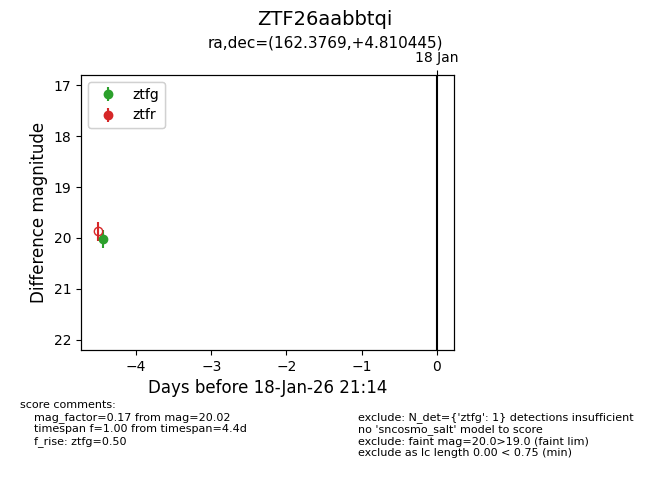
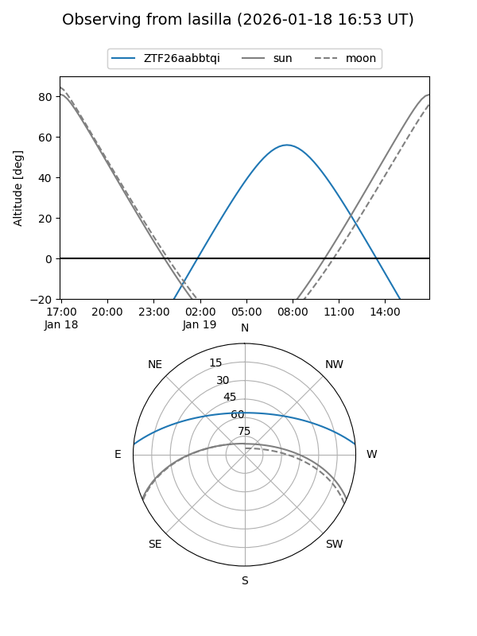
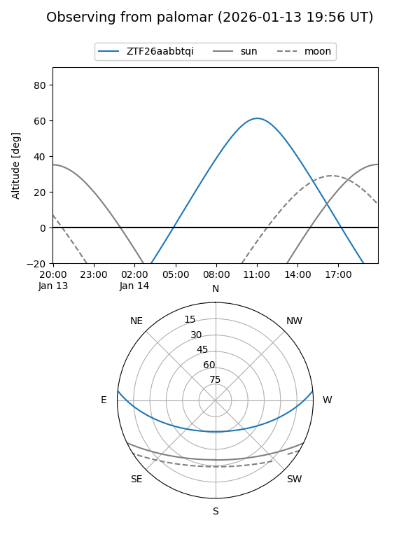

ZTF26aabbtqi
Target ZTF26aabbtqi at 2026-01-14 12:05
Aliases and brokers:
FINK: link
Lasair: link
ALeRCE: link
alt names
ZTF26aabbtqi (ztf,fink_ztf)
Coordinates:
equatorial (ra, dec) = 162.3769,+4.81044
equatorial (HMS+DMS) = 10:49:30.45,+04:48:37.60
galactic (l, b) = (245.0195,+53.37081)
Flags:
Photometry:
last ztfg=20.02
1 ztfg detections
Lightcurve

Visibility


Additional plots